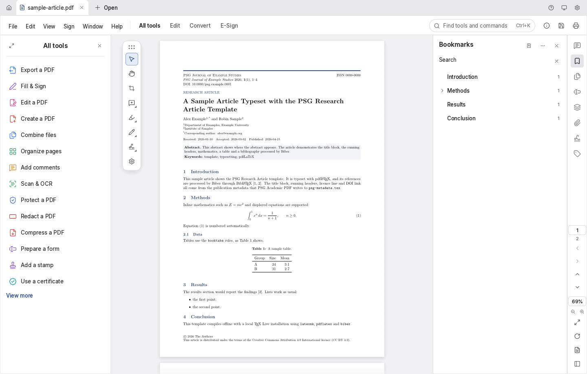

Read, mark up
and sign PDFs.
PSG PDF is an open-source desktop app for reviewing, filling in, signing, organizing and protecting documents. Your files stay on your computer.
Windows · macOS · Linux


One desk for every PDF
For anyone who reads, reviews, fills in, signs or prepares PDFs.
Still maturing: editing existing text works best on Latin script, OCR reads Latin script, and Word export does not keep the layout yet.
Reading and navigation
Crisp at any zoom; continuous, single and two-up layouts, search, bookmarks, thumbnails and layers.
Comments in threads
Highlights, sticky notes, shapes, drawings and stamps, each with its own replies.
Fill in and sign
Fill in forms, then sign with a typed signature in Latin, Chinese, Japanese, Korean, Arabic or Hebrew script, or with a certificate.
Page organization
Reorder, rotate, insert, delete and crop; combine and split documents.
Protect and redact
Passwords and permissions, redaction, and removal of hidden information.
Convert and automate
Export to images, Word, HTML and Markdown; OCR; batch work with the bundled pdfcraft-cli.
A document, from inbox to sent
The whole round trip happens in one window.
Open
Open a PDF, or combine images and other files into one. Run OCR on a scan first.
Review
Highlight, comment and reply in threads.
Finalize
Arrange the pages, fill in the form and sign it. Redact what must not leave and add a password.
Send
Save the PDF, or export it as images, Word, HTML or Markdown.
Download PSG PDF
Choose an installer for your operating system. SHA-256 checksums are on the GitHub release page.
Stable release
View all releases, including betas
Build from source
# Rust 1.95 or newer $ git clone https://github.com/WENSHAO521/psg-pdf.git $ cd psg-pdf $ cargo build --release -p psg-pdf $ ./target/release/psg-pdf sample.pdf
$ cargo test -p psg-pdf
Contribute to PSG PDF
Report an issue, suggest an improvement or contribute on GitHub.